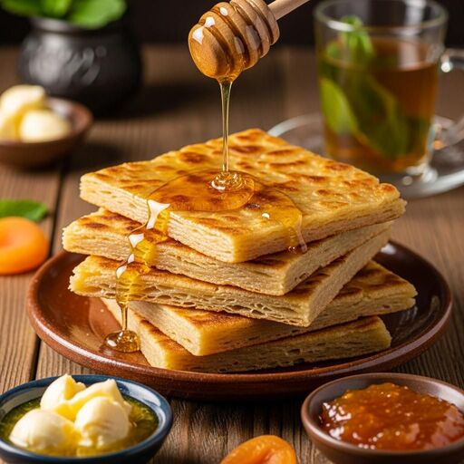

Le Msemen au miel est un dessert traditionnel du restaurant Le Fiasco, préparé avec des crêpes marocaines appelées msemen, garnies demiel de qualité supérieure. Les msemen sont cuits à la perfection, offrant une texture légère et moelleuse, tandis que le miel ajoute une douceur naturelle et une saveur riche. Ce dessert est souvent servi tiède, offrant une expérience gustative délicieuse et réconfortante.
Ingrédients : |
Plat |
|---|---|
|
 |